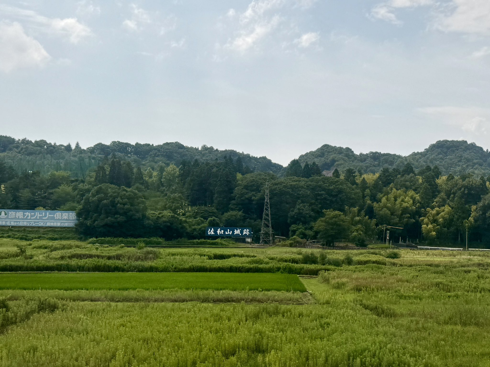
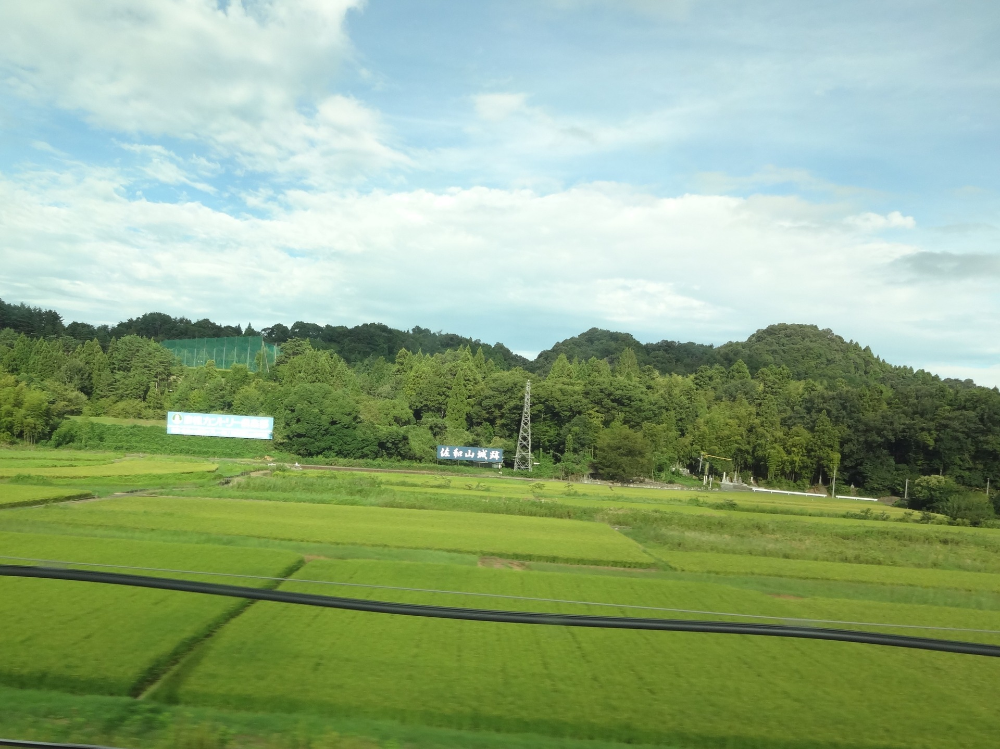

TOKAIDO SHINKANSEN WINDOW VIEW
Can you see Sawayama Castle Ruins from the Shinkansen?
Mitsunari's hill beyond the fields.

- Section
- Maibara → Kyoto
- Seat side
- Seat E · mountain side
- Timing
- About 116 minutes after leaving Tokyo on a Nozomi train
- Photos
- 2 photos
How to find Sawayama Castle Ruins
Soon after Maibara, the hill and sign for Sawayama Castle may appear on the Seat E side. This was the castle of Ishida Mitsunari, defeated at Sekigahara. No keep remains, but spotting the sign connects Sekigahara, Sawayama, and Hikone in just a few minutes of window time.
If you are traveling from Tokyo toward Shin-Osaka, start watching the Seat E · mountain side window as you approach Maibara → Kyoto. If you are traveling toward Tokyo, the order is reversed.
Why this view matters
Sawayama Castle Ruins is one of the window views that make the Tokaido Shinkansen more than a transfer. The train moves fast, so visibility depends on weather, seat position, and timing.
Sawayama Castle Ruins in photos
